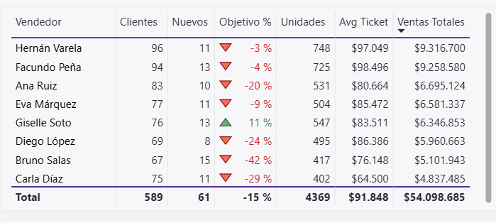

Reuniones sin foco
Todos miran numeros distintos y nadie sale con prioridades claras.
Diseno dashboards comerciales en Power BI para equipos que necesitan ver desvios, oportunidades y foco de accion sin depender de reportes manuales.
Vista general



Muchas areas comerciales ya tienen Excel, CRM o reportes. Lo que falta es una vista clara para responder rapido donde se esta desviando el negocio, donde se pierde margen y que oportunidades conviene atacar primero.
Todos miran numeros distintos y nadie sale con prioridades claras.
Los datos estan repartidos entre Excel, CRM, ERP o reportes manuales.
Se invierte mas energia en armar informacion que en usarla.
Clientes en riesgo, upsell y señales de margen quedan enterradas.
Un dashboard comercial no sirve para ver mas graficos. Sirve para recuperar foco, velocidad y oportunidades que hoy se te escapan.
Detecta rapido donde el equipo se aleja del objetivo.
Encuentra cuentas, productos o segmentos con mayor potencial.
Toma decisiones mas rentables, no solo mas volumetricas.
Identifica caida de actividad antes de que impacte fuerte.
Automatiza seguimiento y libera tiempo operativo.
Todo el equipo discute sobre la misma verdad.
Vista general
No se trata de llenar un tablero de metricas. Se trata de elegir indicadores que te dicen donde actuar primero.
Pasamos de reportes dispersos a una vista clara, accionable y adoptable por el equipo.
Tu tablero listo en semanas, no meses
Solicitar implementacionUn proceso simple para pasar de datos dispersos a decisiones claras.
Discover
Execute
Scale
Contexto: Equipo comercial con informacion dispersa y poco foco en reuniones.
Que se hizo: Definicion de KPIs, dashboard a medida, integracion minima viable y rutina semanal.
Que cambio: Mas claridad de foco, menos tiempo en reportes, visibilidad de desvios y decisiones mas rapidas.
Ayudo a lideres comerciales B2B a convertir datos en decisiones e ingresos.
Recurso gratuito
Aprende que mirar para detectar desvios, oportunidades y foco comercial sin depender de reportes eternos.
El dashboard de ventas prioriza decisiones con KPIs accionables. El reporte suele ser mas descriptivo y menos orientado a accion inmediata.
Avance vs meta, margen, conversion, ticket promedio, productividad por vendedor y cobertura de oportunidades.
Si. Trabajo con integracion minima viable segun las fuentes reales del equipo.
Una primera version operativa suele estar lista en semanas, no meses.
No. Se puede comenzar con una base minima confiable y evolucionar por etapas.
Si. El enfoque se adapta al nivel de madurez comercial y al volumen operativo del equipo.
Revisamos tu situacion comercial, definimos donde esta el mayor impacto y vemos si tiene sentido implementar un dashboard a medida.